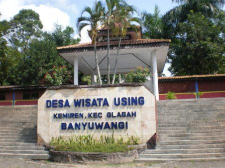

Wisata Osing
lokasi: Dusun Krajan, Kemiren, Glagah, Kabupaten Banyuwangi, Jawa Timur 68432
Waktu : 07.00 - 17.00 WIB
Harga : Rp.8000/orang
lokasi: Dusun Krajan, Kemiren, Glagah, Kabupaten Banyuwangi, Jawa Timur 68432
Waktu : 07.00 - 17.00 WIB
Harga : Rp.8000/orang